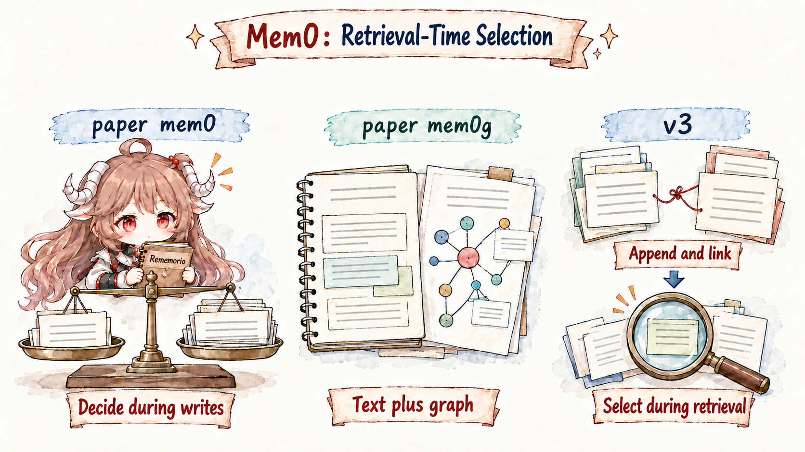
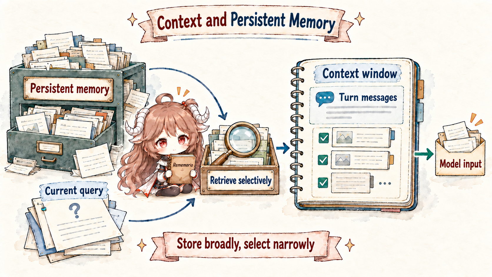
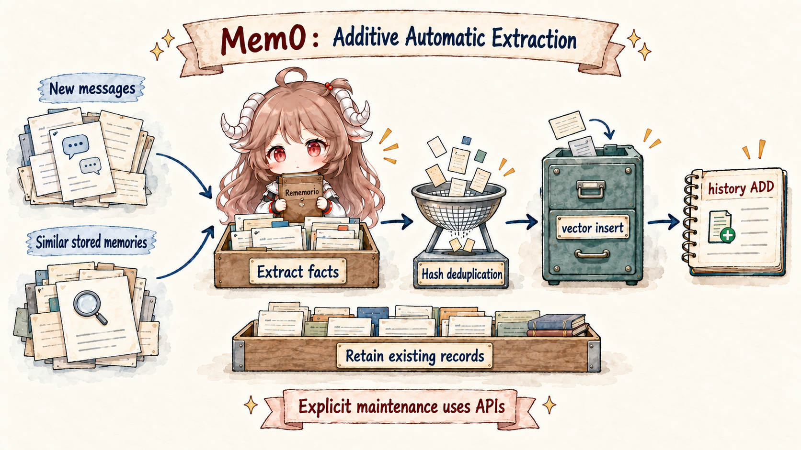
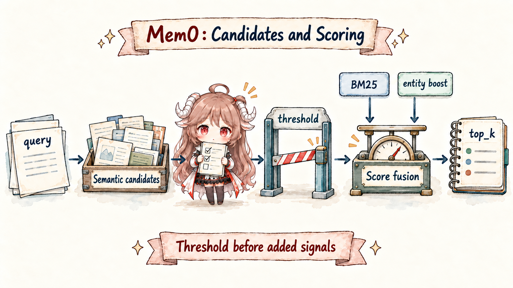
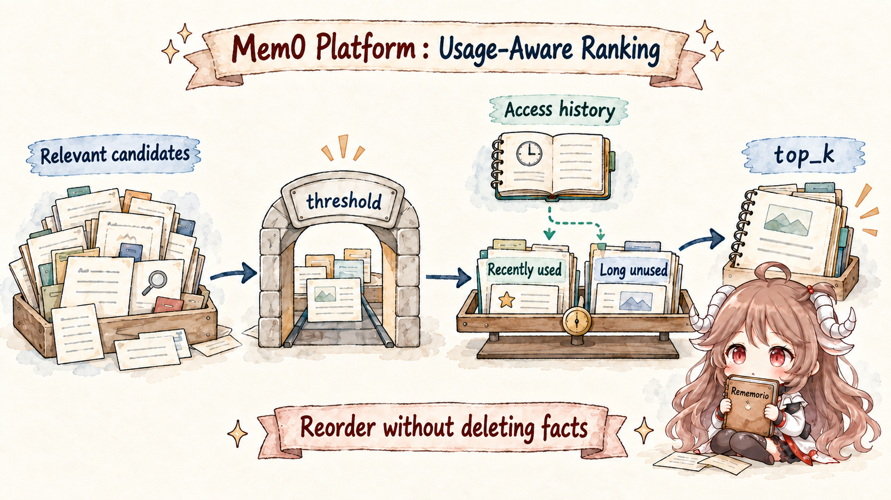
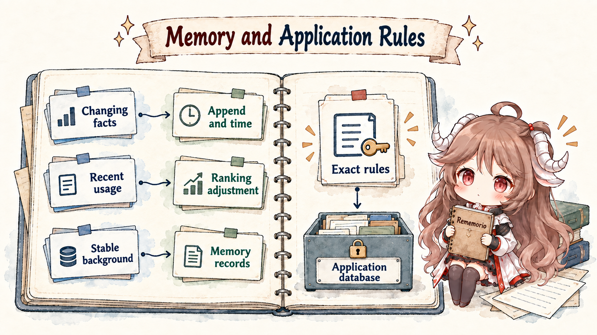

Start with a concrete case. A restaurant-booking agent talks with the same user for half a year: in January, the user lives in Beijing and usually chooses vegetarian restaurants with friends; in March, they say they have started eating seafood; in April, they move to Paris; in June, they ask, "Find a restaurant for this weekend, and remember my current situation"; in July, they ask, "What kind of place did I usually choose with friends before?" The agent cannot just replay chat history. It has to know which facts describe the current preference, which facts are historical, and which changes are worth preserving as changes.
Three direct designs are tempting. Put the whole half-year conversation into the prompt: it works briefly, then costs too much and lets old facts distract the answer. Maintain a single user profile and overwrite old values: the current state looks clean, but historical questions lose their evidence. Store every fact in a vector database and retrieve top-k: implementation is simple, but duplicates, conflicts, relationships, and time still need handling. Mem0 is interesting because it carries those direct designs one step further: memory becomes a separate layer that can extract searchable facts from conversation, then return a small set of relevant memories to the model before answering.
In an application architecture, Mem0 sits between the app and the model. The app sends conversation, user scope, and agent scope into Mem0; Mem0 turns durable information into memory records; when the model answers, the app retrieves a small set of relevant memories and places them back into context. That position explains why it became a central memory-layer option for agents: teams do not have to stuff all history into the prompt or rebuild extraction, deduplication, and retrieval logic from scratch. Several Mem0 posts make the same distinction: the context window is closer to RAM than storage; a larger context window still does not replace persistent memory; and a memory file tends to mix evidence, preferences, temporary state, and retrieval policy. Together they point to one engineering stance: a memory layer is valuable because it separates preservation, retrieval, temporal interpretation, and ranking policy. Mem0 v3, Temporal Reasoning, and Memory Decay continue along that line.
Questions this article answers. By the end, you should be able to replay the restaurant example across four moves: how paper mem0 uses similar old memories and an LLM to decide ADD / UPDATE / DELETE / NOOP, why mem0g moves entity relations into a graph, why v3 makes writes thinner and shifts judgment into read, and how Temporal Reasoning and Memory Decay answer “which date frames this answer” and “which recently used memories should rank higher.”
Source scope. This article separates four layers. The original Mem0 paper explains paper mem0 and mem0g. Mem0's official blogs and docs define the documented Platform v3 behavior. The public mem0ai/mem0 source explains the visible OSS and Python SDK paths. Platform service internals are not public, so Temporal Reasoning and Memory Decay are described as documented contracts, not as reconstructed server implementation.
The rest of the article keeps returning to this restaurant case. First, paper mem0 decides ADD, UPDATE, DELETE, or NOOP during write. Then mem0g explains why entities and relationships became a graph path. Then v3 moves toward ADD-only writes, entity indexing, and hybrid retrieval. Temporal Reasoning and Memory Decay follow naturally: one asks which date frames the history, and the other asks whether recently reused memories deserve a softer ranking boost.
1. One problem, three memory routes
Two naming lines are easy to mix together. The paper talks about mem0 and mem0g; product and SDK migration material talks about the older v2 API and v3 behavior. This article avoids forcing them into an official "v1, v2, v3" sequence and reads them as algorithmic tradeoffs: if a user's preferences and location change over time, when should the system merge old facts, when should it preserve relationships explicitly, and when should it append new evidence first? Once that route is clear, ADD-only, Temporal Reasoning, and Memory Decay become layers answering the same problem rather than isolated feature names.
| Name | Better Reading | Do Not Read It As |
|---|---|---|
| paper mem0 | The base paper algorithm: extract new memories, then choose ADD/UPDATE/DELETE/NOOP against similar old memories. | The official product "v1". The public materials do not name it that way. |
| paper mem0g | The graph-augmented paper algorithm: explicitly extract entities and relationships, then use a graph database. | The official product "v2". It is better read as a graph variant beside mem0. |
| v2 API / SDK | The older product API in the migration materials: add could return ADD/UPDATE/DELETE events, with graph-memory options such as enable_graph and graph_store. |
Only mem0g. v2 is a product/API/SDK behavior set, not the paper algorithm name. |
| mem0 v3 | The April 2026 behavior: single-pass ADD-only writes, built-in entity linking, hybrid retrieval, Temporal Reasoning, and Memory Decay. | A rename of mem0g. v3 changes writes, relationship handling, and retrieval ranking together. |

1.1 paper mem0: clean up old memory during write
Focus on one event first: in March, the user says, "I have also started eating seafood." The store already has "the user usually chooses vegetarian restaurants with friends." Should the new fact be added as a separate memory? Should it update the old preference? Should the old preference remain because it is historical evidence? Paper mem0 answers by cleaning up old memory during write so the memory set stays compact.
| Before Write | New Conversation | Question paper mem0 Tries to Answer |
|---|---|---|
| User usually chooses vegetarian restaurants with friends. | User recently started eating seafood. | Is this a new preference, an extension, or a replacement? |
| User lives in Beijing. | User moved to Paris in April. | Should the old location update, or remain as history? |
| User likes quiet small restaurants. | User dislikes noisy bars. | Is this the same preference made more specific, or a separate fact? |
The base algorithm in the original paper has two main steps.
First, the LLM extracts candidate memories from the latest conversation and recent context. Second, for each candidate,
the system retrieves similar existing memories, then asks the LLM to compare old and new facts and choose
ADD, UPDATE, DELETE, or NOOP.
Similarity is not the final decision; it is how the system brings likely related old memories in front of the LLM.
The paper describes this as retrieving the top-s semantically similar memories, and its experiments use
s = 10. In other words, the LLM sees a small retrieved set for each candidate, not the whole memory store.
paper mem0 write path:
new conversation
-> LLM extracts candidate memories
-> embed each candidate
-> vector search retrieves top-s similar existing memories
(paper experiments use s = 10)
-> LLM compares candidate with those retrieved old memories
-> ADD / UPDATE / DELETE / NOOP changes the memory store
"Similar" has two responsibilities. Vector search handles recall: the candidate becomes an embedding, and vector similarity
brings back old memories that may matter. Those recalled records are still only candidates; top-s is also
a context-budget valve so the prompt does not receive every old memory. The LLM makes the actual decision:
duplicate, more specific, contradictory, or new. The visible OSS
DEFAULT_UPDATE_MEMORY_PROMPT
follows the same shape: compare new facts with existing memory, then choose one of four operations.
Its NONE is the same no-op idea this article calls NOOP.
DEFAULT_UPDATE_MEMORY_PROMPT, simplified:
new fact + similar existing memories
-> ADD the old memory does not contain the fact
-> UPDATE the same subject changed, or the new fact is richer
-> DELETE the new fact negates old memory, or the user asks to remove it
-> NONE already present, irrelevant, or not worth writing| Relation Between New Fact and Old Memory | Operation | Restaurant-case Reading |
|---|---|---|
| The old memory does not contain this fact | ADD |
The old memory only has restaurant preference; the new fact is the move to Paris. |
| Same fact, different wording | NOOP / NONE |
Old: likes quiet restaurants. New: prefers places that are not noisy. |
| Same subject or preference, but the new fact is richer or the value changed | UPDATE |
Old: usually eats vegetarian. New: now also accepts seafood. |
| The new fact explicitly negates old memory, or the user asks to remove it | DELETE |
Old: likes seafood. New: do not recommend seafood anymore. |
The UPDATE row is important. Paper mem0 is trying to keep the memory set compact,
so it may fold a preference extension or change into the same preference memory. v3 takes a different route:
do not fold too early; preserve the change as new evidence first.
This naturally answers why a highly similar fact is not automatically a duplicate ADD.
Paper mem0 first uses embeddings to retrieve similar old memories, then lets the LLM decide whether to add, update, delete,
or do nothing. That is still not a database-level uniqueness guarantee. If vector search misses the right old memory,
or if the LLM misreads a paraphrase as a new fact, duplicate ADD can happen.
The value of s is part of the tradeoff: too small can miss the old memory that should be compared;
too large increases LLM context, cost, and latency. The upside is a compact memory set. The cost is that write-time UPDATE and DELETE
can weaken historical evidence. If the user later asks why they used to choose vegetarian restaurants more often,
an overwritten or deleted version may no longer be available.
1.2 paper mem0g: pull relationships out of text memories
Add a relationship problem to the same restaurant case. The user says, "I often eat out with Alice." Later they say, "Alice is allergic to shellfish." Later still they ask, "What should I avoid when booking dinner with Alice in Paris this weekend?" Text memories can store those sentences, and vector similarity can retrieve some nearby content. But it has no built-in object map: who Alice is, how she relates to the user, and how shellfish allergy should affect seafood recommendations are all buried in separate text records. Mem0g adds a structured path beside text memory: memory records still go into the vector store, while entities and relationships also go into a graph store. The graph is not a replacement for text memory; it is an index for "which objects are connected."
| Step | Text-memory Path | Graph Path |
|---|---|---|
| Write | Extract facts such as "user often eats with Alice" and "Alice is allergic to shellfish" into the vector memory store. | Also extract entities such as Alice, shellfish allergy, and Paris, plus relationship edges. |
| Read | Use semantic similarity to retrieve memory records related to the query. | Start from entities in the query or recalled memories, then traverse graph neighbors and relationships. |
| Merge | Place semantically relevant text facts into the candidate context. | Add structured facts about Alice and dietary constraints to the same candidate context. |
mem0g can be read as two parallel write paths:
message
-> memory facts -----------------> vector memory store
-> entities + relationships -----> graph store
search(query)
-> vector memories
-> graph neighbors around matched entities
-> merged context for the modelMinimal graph example:
User --eats_with----> Alice
Alice --allergic_to--> shellfish
User --located_in---> ParisIn that design, entities and relationships really are graph-database objects. The paper represents mem0g memory as a directed labeled graph: entities are nodes, relationships are edges or triplets, and Neo4j is the underlying graph database. Read does not rely only on exact node-name lookup. It uses two paths: entity-centric retrieval finds key query entities, locates corresponding graph nodes, and traverses incoming and outgoing edges; semantic triplet retrieval embeds relationship triplets and matches them against the query embedding.
mem0g graph retrieval:
query: "What should I avoid for dinner with Alice in Paris?"
entity-centric:
Alice / Paris -> graph nodes
-> incoming + outgoing edges
-> Alice --allergic_to--> shellfish
-> User --located_in--> Paris
semantic triplet:
query embedding
-> match encoded triplets
-> rank relevant relationships above thresholdThis handles a different recall failure: two facts may not be close as sentences, but they should appear together because they share an entity or relationship path. "Alice is allergic to shellfish" and "the user wants a seafood restaurant in Paris" are not paraphrases, yet a recommendation should consider both. The graph route lets retrieval follow the Alice node to the allergy constraint and merge it with restaurant preference. It expands object connectivity; it does not replace vector similarity with keyword scoring. The later v3 entity linking path is different: it turns entity relationships into retrieval-ranking signals instead of exposing a full graph-traversal API.
| What mem0g adds | Problem it solves | Cost it introduces |
|---|---|---|
| entity | Gives people, organizations, projects, and places stable anchors. | Requires entity extraction, alias merging, and cross-turn alignment. |
| relationship | Makes "who is connected to whom, and how" explicit instead of buried in text. | Relationships can change or conflict with old edges, so they need maintenance rules. |
| graph store | Adds retrieval by entity adjacency, multi-hop paths, and semantic triplets. | Adds storage, query paths, and result-merging logic. |
| vector + graph merge | Lets semantic relevance and relationship connectivity both affect context selection. | Needs deduplication, ranking, and conflict handling across two result types. |
The point is not to replace text memory with a graph. It is to give relationship-heavy information its own index. That solves the "how do these objects connect?" problem, but it does not solve the historical-version problem. The graph can say Alice, shellfish allergy, and Paris restaurants are related; when the user later changes dinner companions, or when a relationship changes over time, the system still has to decide whether the old fact should be updated, deleted, or preserved as history.
1.3 mem0 v3: make writes thin, move judgment into read
At this point, the strengths and pressure points of the first two routes are visible. Paper mem0 keeps the memory set compact, but write-time has to decide whether old facts should be preserved, updated, or deleted. Mem0g makes relationships explicit, but adds a graph-maintenance path beside text memory. Both treat write-time as the moment to tidy the store. That works well for short-term preferences. It becomes harder when a fact changes over time. If the user lived in Beijing in January and Paris in April, the system should preserve a chain of changing-state evidence, not collapse everything into one always-current address field.
The official v2-to-v3 migration docs and Token-Efficient Memory Algorithm post describe v3 as single-pass ADD-only. The decision moves in time: write safely stores new evidence, and read decides which viewpoint this answer needs. The write path is reduced to three jobs: extract durable new facts, store them with deduplication, links, and entity indexes, then let retrieval and ranking choose which records enter the current model input.
Changing state, shape-level example:
t1 memory:
text: "User lives in Beijing as of 2025-01-10"
timestamp: "2025-01-10T09:00:00Z"
t2 memory:
text: "User lives in Paris as of 2025-04-02"
timestamp: "2025-04-02T11:00:00Z"
linked_memory_ids: ["t1"]
search("Where does the user live now?", reference_date="2025-04-10")
-> should rank Paris higher
search("Where did the user live before March?", reference_date="2025-03-01")
-> can still recover Beijing
Treat this as a four-step data-flow sketch, not the exact public API response shape:
ADD-only preserves both Beijing and Paris as evidence; linked_memory_ids says the two records are about the same changing state;
Platform timestamp records when a fact entered history; reference_date
lets search say which date frames this answer. Beijing is not invalidated during write, and Paris does not erase the old evidence.
Read-time ranking decides which record belongs in front for the current question.
The public OSS
_add_to_vector_store()
follows that evidence-ingestion shape. It gathers recent messages and similar existing memories, makes a single LLM extraction call,
then batch-embeds, hash-deduplicates, inserts vectors, records history ADD events, and links entities.
Existing memories are still consulted, but they help with deduplication, linking, and contextual judgment; old records are not
UPDATEd or DELETEd in this path.
# _add_to_vector_store(), simplified shape
last_messages = db.get_last_messages(...)
existing_results = vector_store.search(..., top_k=10)
extracted = llm.generate_response(ADDITIVE_EXTRACTION_PROMPT, ...)
embeddings = embedding_model.embed_batch(memory_texts, "add")
for memory in extracted:
if hash_seen(memory):
continue
vector_store.insert(memory)
history.event = "ADD"
link_entities(memory)| v3 choice | Pressure it absorbs | Constraint left for later |
|---|---|---|
| single-pass extraction | Reduces repeated old-vs-new arbitration during write. | Extraction quality depends more on one prompt, similar old memories, and recent context. |
| ADD-only | Stores a state change as new evidence. | Duplicates, conflicts, and stale facts move into retrieval. |
linked_memory_ids |
Connects new and old facts so later retrieval can explain what changed. | Retrieval and display need to understand those links, not only the single text record. |
| built-in entity linking | Keeps part of mem0g's relationship cue while reducing external graph-store burden. | Entity signals enter ranking; they do not provide the whole graph-query answer. |
| hybrid retrieval | Moves "which memory should this answer see?" into read-time ranking. | The current model input depends on signal fusion, not only on write-time cleanliness. |
Seen this way, ADD-only is more than a token-saving trick: write preserves evidence; read selects the records for this turn. Write avoids irreversible judgment, while read combines semantic, keyword, entity, time, and access signals to decide the current model input. The tradeoff is clear: old facts remain in the store, storage grows, and retrieval must handle duplication, conflicts, and stale facts. Temporal Reasoning and Memory Decay answer the next question: once history is preserved, which few records should this turn see?
1.4 Separate the context window, persisted records, and current retrieval results
ADD-only often raises a natural question: if history is preserved, does every old fact enter the prompt? The answer depends on three separate objects. The context window is the model's working area for the current request. A memory record is a durable fact that can be searched later. The current retrieval result is the small set of memories inserted back into the current request. ADD-only changes how memory records are written; Temporal Reasoning and Memory Decay change how those current results are selected. Neither one means the full history is pushed into the context window.

| Term | Meaning Here | Common Misread |
|---|---|---|
| context window | The current request working area for short-term reasoning and tool results. | Treating a larger window as durable memory while ignoring cost and lost-in-the-middle effects. |
| memory record | A persisted fact extracted from conversation, with payload, metadata, embedding, and history. | Treating the record as "current truth" instead of a fact that may have been true at a point in time. |
| current retrieval result | The small result set shown to the model after retrieval, filtering, and ranking. | Treating it as the whole memory store, so un-retrieved facts appear nonexistent. |
| ranking layer | The layer that turns semantic, keyword, entity, time, and usage signals into result order. | Treating ranking output as if old records had been overwritten. |
2. Why writes are ADD-only: preserve evidence before judging old facts
Think of the write path as an archivist. When the user says, "I started eating seafood," the dangerous move is not missing one note. It is immediately rewriting "prefers vegetarian restaurants" as if that older fact never mattered. In June, the user may ask what kind of place they used to choose for dinner. At that point the older fact is not junk; it is evidence. v3 narrows the archivist's authority: write the new evidence first, and avoid deciding during write whether the old evidence should be overwritten, deleted, or treated as forever stale.
Mem0's Token-Efficient Memory Algorithm
post frames v3 as single-pass ADD-only. The public OSS path has the same shape, and it is easier to read as an evidence-ingestion path:
Memory.add()
prepares inputs, filters, and metadata before calling
_add_to_vector_store().
In that visible path, the LLM extracts new memories, then the runtime batch-embeds them, deduplicates by hash,
inserts vectors, records history ADD events, and links entities.
The function list matters less than the behavioral change: the write path now protects new evidence instead of erasing old history.

| Pressure in the older route | ADD-only handling | Advantage |
|---|---|---|
Write-time UPDATE / DELETE can be wrong |
New facts enter the memory store as new records. | Irreversible overwrite is reduced, and evidence remains explainable later. |
| The same preference can have different answers at different times | The transition itself can become a memory with time signal. | "Now" and "then" no longer compete for one overwritten record. |
| Graph relations add storage and maintenance cost | linked_memory_ids and built-in entity linking preserve relationships. |
Relationships remain available without forcing OSS users to operate an external graph store. |
| Longer write paths increase cost, latency, and failure surface | Single-pass extraction, batch embedding, hash deduplication, then insert. | The write path is shorter, and richer decisions move to retrieval. |
2.1 LLM extraction links evidence; it is not the final state judge
ADD-only does not mean the LLM leaves the write path. It means the LLM's role changes.
The older route used it like a judge deciding whether an old memory should be UPDATEd or DELETEd.
v3 uses it more like an evidence clerk: decide whether the new sentence is worth preserving, which old memory it relates to,
and how relative time phrases such as "last week" or "yesterday" should be grounded.
ADDITIVE_EXTRACTION_PROMPT
encodes that job: both user and assistant messages can carry information;
relative time must be grounded by the observation date; related prior memories are linked with linked_memory_ids,
rather than directly rewriting old records.
New message:
"I switched to oat milk because almond milk started causing sensitivity."
Write-time handling:
1. Is this a durable new fact? Yes.
2. Is it related to an old preference? Yes, link the old memory.
3. Should it overwrite the old memory? Not decided during write.{
"memory": [
{
"id": "0",
"text": "User switched from almond milk to oat milk lattes after developing an almond sensitivity",
"linked_memory_ids": ["existing-memory-id"]
}
]
}The key point in this JSON is not the shape by itself. It is that the transition becomes a new traceable fact. The old preference is not silently deleted. Later retrieval can see both what used to be true and why it changed. Long-running agents need that replayable history; a single latest conclusion is not enough.
2.2 The OSS API rejects Platform-only time fields
Because later sections use Temporal Reasoning, it is worth stating what the public source can prove.
Once observation dates enter the discussion, it is tempting to treat Temporal Reasoning as part of the visible OSS path.
That would overstate the evidence. Public OSS source shows ADD-only write, baseline retrieval, and which parameters are rejected;
Platform v3 exposes the full temporal fields.
Passing timestamp to OSS Memory.add()
raises a Platform-only error; passing reference_date to OSS Memory.search() does the same.
This is an API distinction, not a missing local detail. Later sections can say that the official API separates write time
from search reference time, but the server-side ranking algorithm is not visible in the public source.
3. Read: find candidates first, then decide what the model sees
ADD-only keeps the history, so read has to be more careful. In the restaurant case, the query is "Find a restaurant for this weekend, and remember my current situation." "Beijing vegetarian," "Paris seafood," and "Alice is allergic to shellfish" may all matter, but they matter in different ways: old preference, current location, and companion constraint. The read layer is not only asking "which sentences look close to the query?" It is asking "which memories should enter the model input for this turn?"
In OSS, search starts at
Memory.search()
and flows into
_search_vector_store().
Read in source order, it does five things: normalize the query for keyword search and extract entities; embed the query;
over-fetch semantic candidates; turn keyword-search results into BM25 scores when the store supports it; compute entity boosts
through linked memories; then pass the signals into
score_and_rank().
# _search_vector_store(), simplified shape
query_terms = lemmatize_for_bm25(query)
query_entities = extract_entities(query)
query_vector = embedding_model.embed(query, "search")
internal_limit = max(limit * 4, 60)
semantic_results = vector_store.search(..., top_k=internal_limit)
keyword_results = vector_store.keyword_search(query_terms, top_k=internal_limit)
bm25_scores = normalize_keyword_scores(keyword_results)
entity_boosts = compute_boosts_from_linked_entities(query_entities)
ranked = score_and_rank(
semantic_results,
bm25_scores=bm25_scores,
entity_boosts=entity_boosts,
threshold=threshold,
top_k=limit,
)That order clears up the common retrieval questions. BM25 is present, but in the visible OSS path it is a keyword score signal; the candidate pool first comes from semantic search. Entity search does not produce the final answer by itself either; it boosts memories linked to matched entities. The path is closer to additive score fusion: semantic candidates pass a gate, then BM25 and entity boost adjust their scores. Therefore, this is better read as adding scores over the same semantic candidate set, not as applying RRF to separate vector, BM25, and entity ranked lists. A compact reading is: semantic similarity keeps results on topic, keywords preserve exact terms, and entity signals keep related objects connected.

3.1 Filter semantically unrelated candidates before keyword and entity fusion
Ranking fails quickly when familiarity is mistaken for relevance. Suppose Alice appears in many memories and the query also mentions Alice, but this turn is about restaurant preference, not every older dinner plan involving Alice. If entity boost acted alone, many Alice-related records would look important. Fusion starts with a gate instead: candidates below the semantic threshold are removed before normalized BM25 and entity boost are added. Keyword and entity signals can change the order among relevant candidates, but they should not rescue a semantically unrelated one.
semantic candidates
-> threshold gate
-> add normalized BM25 when available
-> add entity boost when available
-> normalize by active signal budget
-> return top_kif semantic_score < threshold:
drop(candidate)
combined = (semantic_score + bm25_score + entity_boost) / max_possible_scoreIn other words, the final score comes from semantic score, BM25 score, and entity boost added together. BM25 and entity signals can reorder relevant candidates, but they do not pull a memory into the final result if it never entered the semantic candidate pool. The design is conservative: it gives up some pure keyword recall in exchange for not letting familiar names, restaurant names, or frequent terms force unrelated memories into the current model input.
3.2 "Still applies now" needs time and usage signals
Passing the semantic gate only means "related." It does not mean "the right fact for this moment." A user can like A, then switch to B. Both records should remain, because one answers what was true then and the other answers what is likely true now. Retrieval needs two more signals: Temporal Reasoning for the time point of the question, and Memory Decay for recently reinforced context. They do not replace semantic relevance; they continue the selection among already relevant candidates.
4. Temporal Reasoning: let the query stand on a date
"I live in Paris now" and "where did I live before March?" may involve the same residence state, but they should not produce the same answer.
Temporal Reasoning gives the query a point of view in history instead of making the latest fact automatically win.
It does not rewrite old records into new ones. It lets write record when a fact was observed and lets search state the date
from which the answer should be framed.
The Temporal Reasoning announcement
and docs define the public contract:
Platform v3 support, enabled by default; timestamp on add; reference_date on search;
and unchanged search result shape.
4.1 Request shape: observation time and search time are separate
Return to the Beijing/Paris example. Saying in January that the user lives in Beijing, and in April that the user lives in Paris,
are observation times for two facts. Asking in April "where do I live now?" or asking from March "where did I live then?"
is the time perspective of the current search. They both look like "time," but they are different roles.
If those roles collapse, the system has to guess whether the newest fact should overwrite the older one.
Platform requests separate them:
timestamp describes when the memory entered history, and reference_date describes the date from which this search should answer.
The Python Platform client posts add and search requests to v3 endpoints:
/v3/memories/add/ and /v3/memories/search/.
The visible source shows request shape and parameter forwarding. The server-side details of temporal ranking are not public.
# Platform shape, simplified
client.add(
messages=[{"role": "user", "content": "I currently live in Beijing."}],
user_id="u1",
timestamp="2025-01-10T09:00:00Z",
)
client.add(
messages=[{"role": "user", "content": "I currently live in Paris."}],
user_id="u1",
timestamp="2025-04-02T11:00:00Z",
)
client.search(
"Where do I live now?",
filters={"user_id": "u1"},
reference_date="2025-04-10",
)The design point is not merely two extra fields. Write attaches time to the evidence; search tells the system which date to look back from. That keeps "lives in Paris now" and "used to live in Beijing" from competing for one overwritten record: a current query can prefer Paris, while a historical query can still recover Beijing.
4.2 Temporal handles contradictory history; it does not replace filters
Filters and Temporal are easy to conflate. Filters answer "which drawer should search open": user, agent, run, or business metadata. Temporal answers "once that drawer is open, from which date should this history be interpreted?" Inside the same user's history, February facts and March facts can coexist. Questions such as "what changed in the last three months" and "what did I prefer last year" need those records to coexist; one latest value is not enough.
5. Memory Decay: recent use can re-rank, but it cannot replace relevance
A time view is still not enough. A long-running agent can collect many facts that are relevant and not obsolete: common projects, frequent contacts, preferred response styles, and tasks that keep coming back. All can be relevant, but the prompt can only hold a few results. If one kind of memory has been reinforced recently, it often deserves to rank higher. That should not be solved by deleting old memories, because those old records may still matter for other questions. Memory Decay and the Memory Decay docs place this at search-time soft re-ranking. It does not delete memories or rewrite facts on write; it gently adjusts ordering after basic relevance has been established.

5.1 The project switch changes search-time ranking
The switch itself tells you where Decay lives. It belongs to project-level search strategy, not to a deletion countdown on each memory record.
The public SDK exposes the project-level switch:
project.update(decay=True)
adds decay to the project update payload. The source comment also frames it as search-time ranking:
recently used memories are boosted, stale ones are gently dampened, and disabling the flag restores pre-decay behavior.
The service-side access history store and multiplier calculation are not visible in OSS.
# Platform project setting, simplified
client.project.update(decay=True)5.2 Relevance comes first; recent use adjusts the order
The easiest misread is "whatever was asked recently should win." If that were true, repeated reimbursement questions
could push reimbursement memories into a restaurant-preference query. The correct boundary is narrower:
recent use changes the order among relevant candidates; it should not let unrelated facts cross the relevance gate.
Decay's public boundaries are designed around that risk: it applies to Platform v3; it works over a candidate pool larger than final top-k;
base relevance thresholding happens before the decay multiplier; public scores are clamped to the normal range; reinforcement is asynchronous.
The docs also give scale boundaries: the pool expands to top_k * 3 with a floor of 50, and the multiplier is clamped between 0.3x and 1.5x.
These details protect one invariant: decay is ranking bias, not fact deletion.
| Boundary | Meaning | Misread Avoided |
|---|---|---|
| search-time | Ranking is adjusted after candidates are retrieved. | Not a write-time rewrite of old facts. |
| threshold first | Basic semantic relevance gates the candidate before decay. | Frequent but irrelevant memories do not automatically enter results. |
| soft multiplier | Recent use moves records up; staleness moves them down. | Not TTL, and not automatic deletion. |
| project opt-in | The project setting enables decay. | Not every Mem0 usage has decay automatically enabled. |
6. Put the layers together: old facts stay, each turn retrieves only what it needs
Return to the opening question: if a user's preference changes from A to B, what should the system remember? Keeping only B breaks historical explanation; pushing A, B, and every related fact into the prompt distracts the model. Mem0's route is layered instead of extreme: ADD-only preserves the evidence; hybrid retrieval builds the candidate pool; Temporal Reasoning supplies the time perspective; Memory Decay lets recent usage influence result order. The model sees neither the whole store nor one overwritten truth. It sees the few records selected for this question.
Mem0's BEAM benchmark post and memory simulation guide point in the same evaluation direction: production memory cannot stop at "was something retrieved?" It also has to handle stale facts, contradictions, time conditions, and retrieval drift. These checks test whether the records sent to the model are reliable.

6.1 Decide which information belongs in Mem0 and which must stay in the application database
That leaves a useful application boundary. Mem0 is a good fit for information that helps the model understand context: user preferences, common tools, long-running project background, and topics that keep reappearing. State that must execute exactly needs a stricter source of truth: payment addresses, permission state, compliance switches, or medical contraindications. Those should live in application databases or explicit policy systems. Mem0 can help retrieve and explain surrounding context; it should not authorize the final action.
| Information State | Best Mechanism | Invariant Protected | Failure Boundary |
|---|---|---|---|
| Preference changed | ADD-only records the transition; temporal query supplies the time view. | Both "then" and "now" remain explainable. | Keeping only the latest value loses history; keeping only the old value answers current queries wrongly. |
| Recently reused context | Memory Decay softly re-ranks search results. | Frequently reinforced information is more likely to enter the current model input. | Decay does not replace business priority or hard policy. |
| Must be exact | Application database, permission system, or explicit rule. | Probabilistic retrieval does not decide high-risk state. | Authorization, payment, or medical decisions should not be owned by memory search. |
| Stable long-term background | Ordinary memory record plus hybrid retrieval. | Repeated questions decrease while personalization remains available. | Without proper filters, user or agent boundaries can blur. |
6.2 The short version of Mem0's route
Mem0's useful lesson is not "make memory a bigger prompt" or "make the model reread all history." It is the separation of responsibilities: the write path preserves evidence, retrieval builds the candidate set, temporal reasoning frames history, decay expresses recent use, and the application owns hard-consistency rules. With that separation, an agent does not have to choose between overwriting old memory and showing all history forever. It also explains why v3's later mechanisms all improve the quality of the records retrieved for each turn.
Sources
- Mem0 docs: Introduction
- Mem0 paper: Building Production-Ready AI Agents with Scalable Long-Term Memory
- Mem0 docs: OSS v2 to v3 migration
- Introducing the Token-Efficient Memory Algorithm
- Introducing Temporal Reasoning in Mem0
- Mem0 docs: Temporal Reasoning
- Introducing Memory Decay in Mem0
- Mem0 docs: Memory Decay
- Memory vs Context Window for LLM and AI Agents 2026
- Context Window vs Persistent Memory
- Your AI Agent's Memory Is Just a File? That's the Problem
- Why BEAM Is a Good Memory Benchmark for AI Agents
- How to Test AI Agent Memory with Mem0
- mem0/memory/main.py:
Memory.add() - mem0/memory/main.py:
_add_to_vector_store() - mem0/memory/main.py:
Memory.search() - mem0/memory/main.py:
_search_vector_store() - mem0/utils/scoring.py: hybrid scoring
- mem0/client/main.py: Platform memory client
- mem0/client/project.py: project settings
- mem0/configs/prompts.py: additive extraction prompt